本文章將介紹使用 GCP 開啟第三方登入驗證
一、建立 google 憑證，到導覽選單 API 和服務 → 憑證
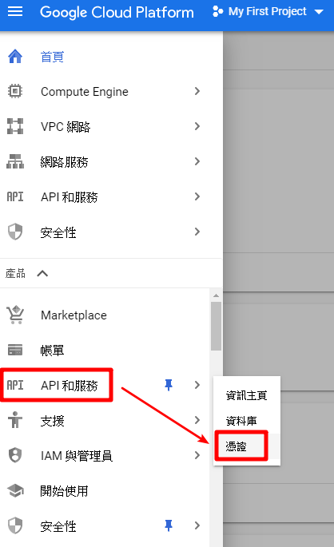
二、到分頁 OAuth 同意畫面，輸入應用程式名稱，再到支援電子郵件底下，選取您想顯示為公開聯絡人的電子郵件地址，您必須擁有這個電子郵件地址或 Google 群組，輸入以授權網域，點選儲存
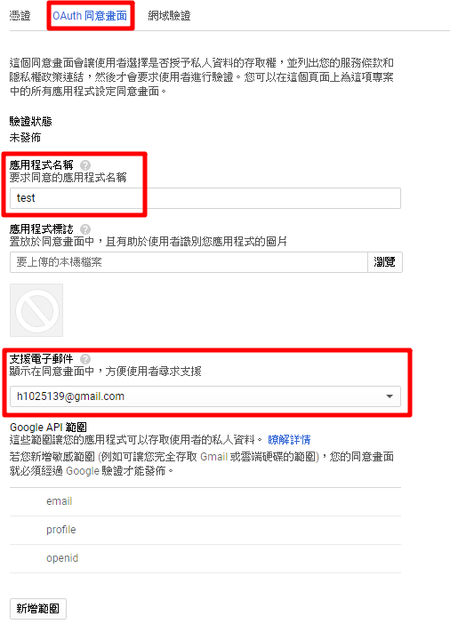
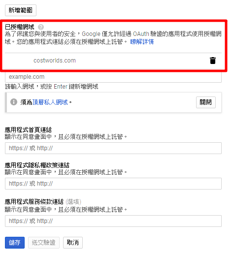
三、到憑證頁面點選建立憑證，選擇 OAuth 用戶端 ID
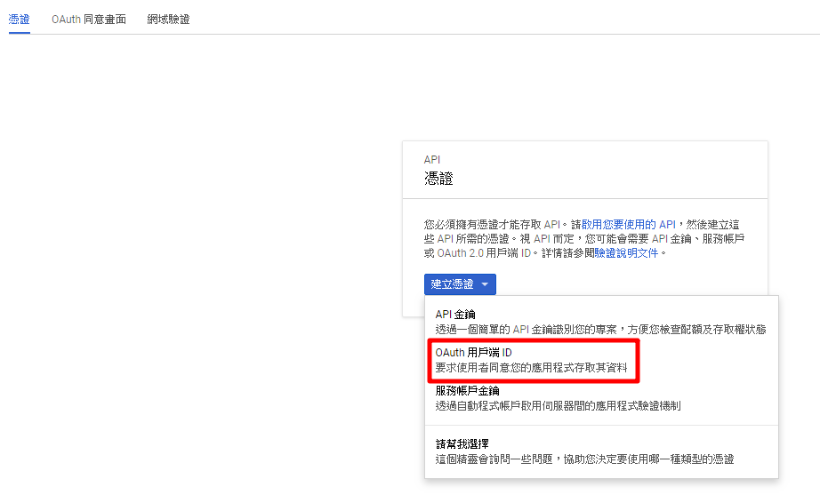
四、點選網路應用程式
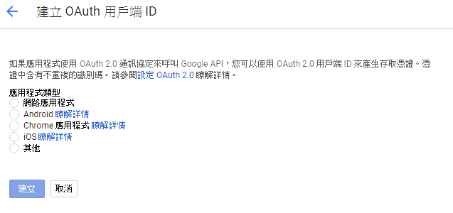
五、輸入名稱，然後在已授權的重新導向 URL 輸入網域名稱，記得要加 /login/google 輸入完後點選建立
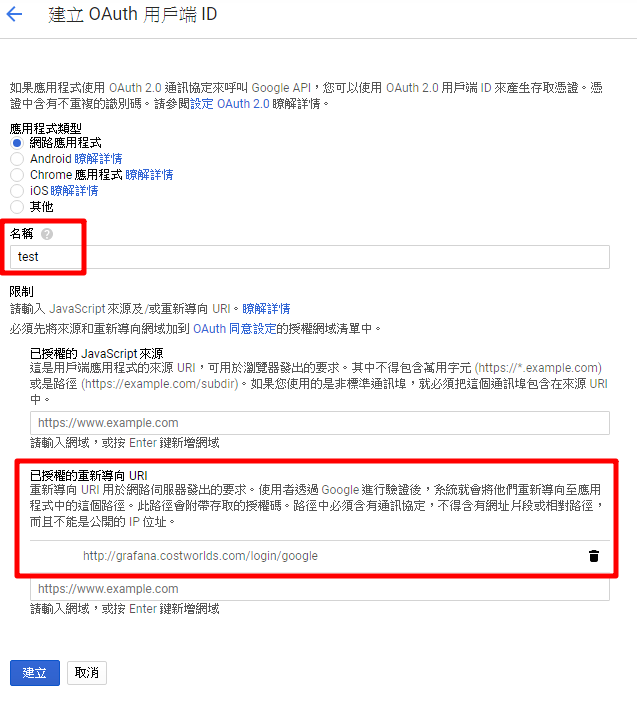
六、建立完後畫面會顯示用戶端 ID 跟用戶端密鑰，這個等等指令會用到
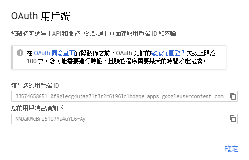
如果忘記複製到，回到憑證畫面會看到你建好的憑證，點選右邊鉛筆編輯就可以看到了
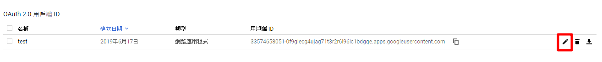
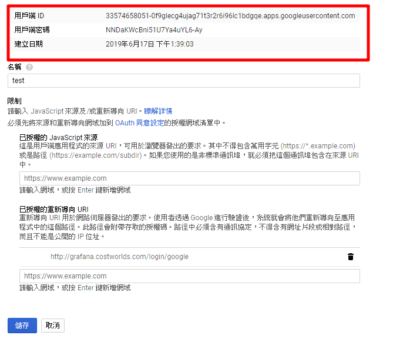
七、在來回到 VM 開始建立 grafana
grafana 建立文章 傳送門
因為是開啟第三方登入驗證，所已建 grafana 會再多幾行指令
1 | docker run -d --name grafana --user root -p 80:3000 -v /data/grafana:/var/lib/grafana --link influxdb:influxdb --restart=always -e GF_SERVER_ROOT_URL=http://grafana.costworlds.com -e GF_AUTH_DISABLE_LOGIN_FORM=false -e GF_AUTH_GOOGLE_ENABLED=true -e GF_AUTH_GOOGLE_CLIENT_ID=33574658051-0f9glecg4ujag71t3r2r6i96lc1bdgqe.apps.googleusercontent.com -e GF_AUTH_GOOGLE_CLIENT_SECRET=NNDaKWcBni51U7Ya4uYL6-Ay -e GF_AUTH_GOOGLE_ALLOWED_DOMAINS=gmail.com -e GF_AUTH_GOOGLE_ALLOW_SIGN_UP=true grafana/grafana:5.2.4 |
多出指令：
GF_SERVER_ROOT_URL：指定 grafana 網站的使用網域，有租網域給該 grafana 服務使用的話可以利用此設定
GF_AUTH_DISABLE_LOGIN_FORM：輸入帳號密碼功能的顯示，如果需要輸入帳號密碼與 google 第三方驗證登入同時存在的話這邊設定 false
GF_AUTH_GOOGLE_ENABLED：開啟google第三方登入驗證功能
GF_AUTH_GOOGLE_CLIENT_ID：google 驗證客端的 ID，可以至 GCP 上的 API 和憑證中的憑證後點選建立憑證 → OAuth 用戶端ID建立後或給予一組用戶端 ID 可以填寫在此。注意這邊需要先到 OAuth 同意畫面新增已授權網域並選擇公開
GF_AUTH_GOOGLE_CLIENT_SECRET：google 驗證客端的密碼，同上在建立 OAuth2.0 用戶端 ID 的時候會同時給予密碼
GF_AUTH_GOOGLE_ALLOWED_DOMAINS：允許認證的登入的網域，也就是說你需要設定什麼帳號的網域登入 google 成功後才可以轉導登入進 grafana
GF_AUTH_GOOGLE_ALLOW_SIGN_UP：允許 google 驗證登入
docker-compose
1 | version: "2" |
八、測試，開啟網頁使用 google 帳號可以登入就是成功了
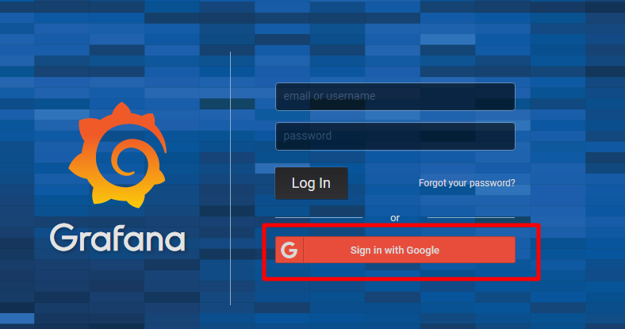
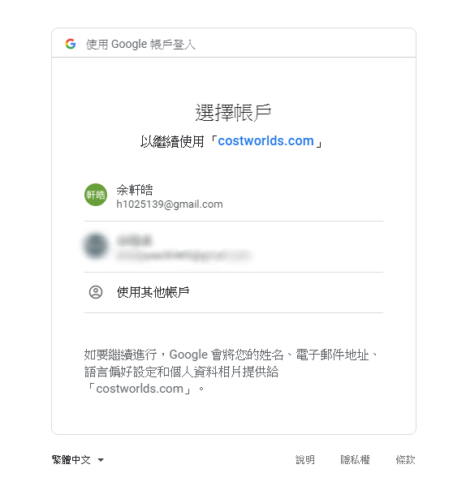
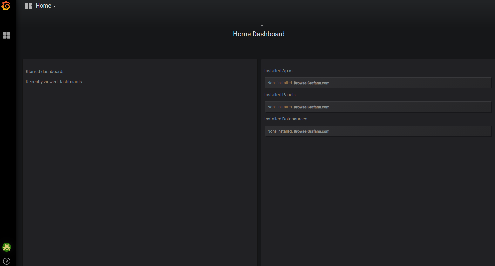
如果把 GF_AUTH_DISABLE_LOGIN_FORM 設定為 true，就只能使用 google 登入了
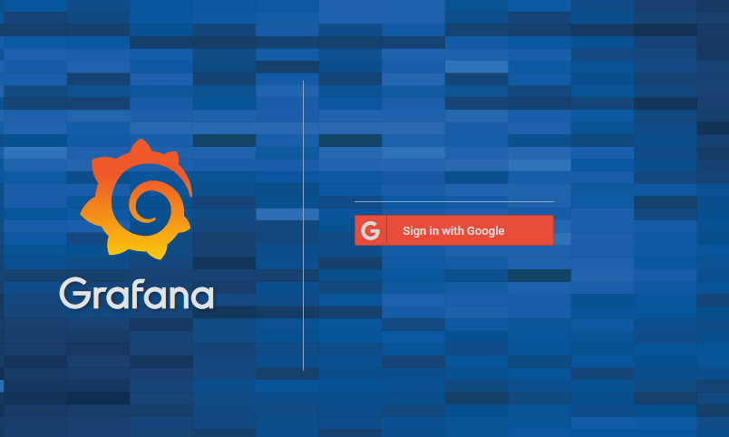